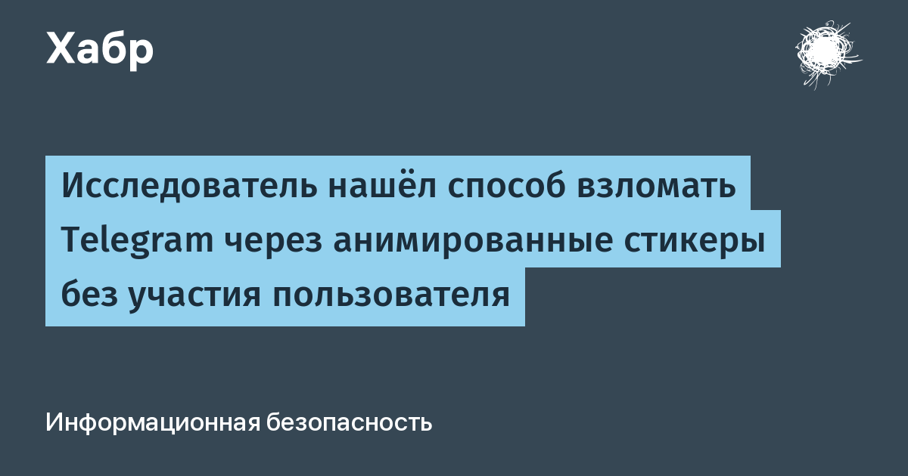

Анимированные стикеры Telegram (формат TGS) — это, по сути, сжатые JSON-файлы с векторной анимацией, которые клиент сам разбирает и рисует через библиотеку rlottie. Исследователь Сайфелдин Азиз применил к ней фаззинг под управлением больших языковых моделей и, по его словам, нашёл несколько ошибок повреждения памяти в клиентах Telegram для iOS, Android и настольных систем. Именно ИИ-ассистированный фаззинг стал двигателем находки: модели перебирали входные данные там, где человек перебирает годами.
Ещё в марте 2026-го Майкл Деплант из Zero Day Initiative сообщил Telegram об уязвимости rlottie — позже она получила номер CVE-2026-111105. Изначальная оценка CVSS 9,8 затем была снижена до 7,0: Telegram заявил, что опасные файлы отсекает серверная проверка стикеров. По официальным данным ZDI, компания даже запросила у исследователя полную рабочую цепочку RCE — что противоречит обычной практике ответственного раскрытия, — а 15 октября опубликовала описание со статусом 0-day.
Азиз утверждает, что за год независимого исследования нашёл несколько 0-click уязвимостей и обходов как серверной, так и клиентской логики доставки стикеров — и цепочкой обошёл «недостижимую» поверхность атаки вплоть до выполнения кода на iOS. Итоговый вопрос доклада прозвучал жёстко: если безопасность клиентов всецело зависит от серверной фильтровалки поставщика, а уязвимый код рисования остаётся в официальных приложениях, — это митигация, архитектурный риск или что-то ближе к бэкдору? Официального анонза от Telegram нет; полный технический разбор цепочки не опубликован, независимого подтверждения работоспособности в открытых материалах тоже.
Патча, закрывающего цепочку, публично не заявлено, а сами условия эксплуатации не раскрыты — «закрыть стикеры кнопкой» в Telegram нельзя. Разумный минимум: держать клиент обновлённым до последней версии, не добавлять в чаты и каналы подозрительные стикерпаки от незнакомцев и следить за официальными уведомлениями Telegram и ZDI. Если подтверждение цепочки появится — решение за компанией, пользователю остаётся только оперативно ставить обновления.